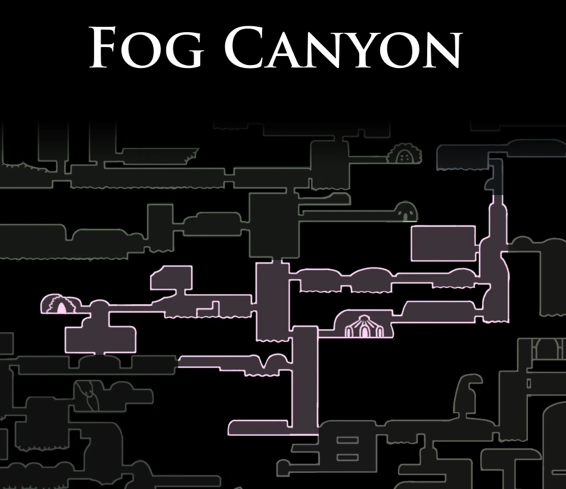

Monomon the Teacher
Uma dos Três Sonhadores, guardada no Arquivo do Professor pelo doce e leal Quirre.

Cornifer
Encontrado nas névoas tentando cartografar as passagens flutuantes e ácidas.

Uma dos Três Sonhadores, guardada no Arquivo do Professor pelo doce e leal Quirre.
Encontrado nas névoas tentando cartografar as passagens flutuantes e ácidas.

Uma criatura viva em forma de água-viva gigante que protege os segredos do Arquivo de Monomon.

Pequenas medusas flutuantes carregadas de ácido volátil que explodem ao menor sinal de impacto.

Medusas dóceis que flutuam pacificamente pelas águas brumosas do cânion.